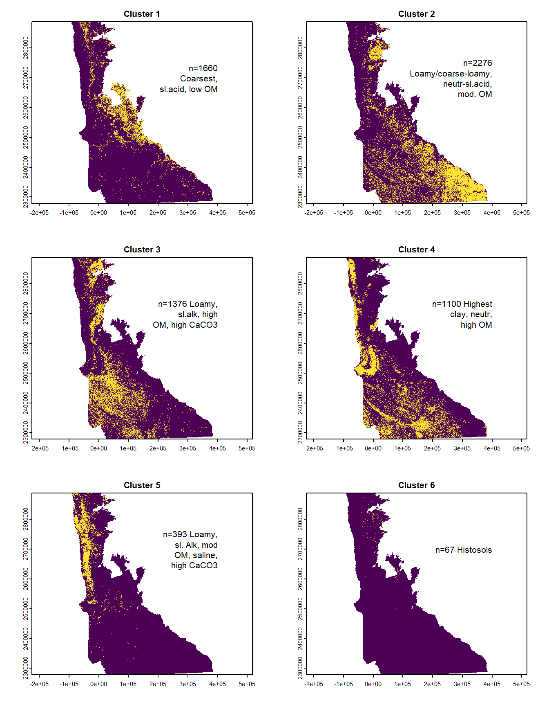
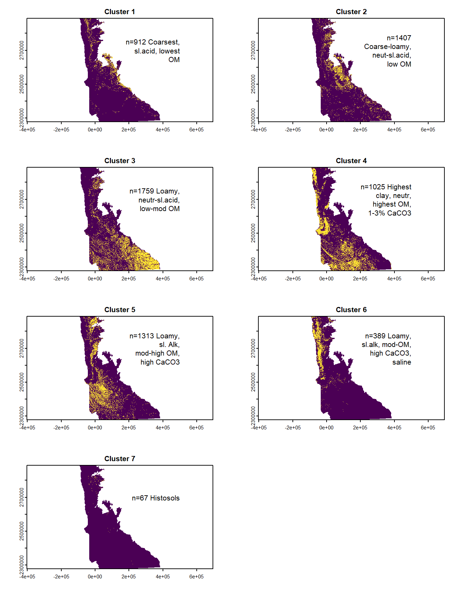
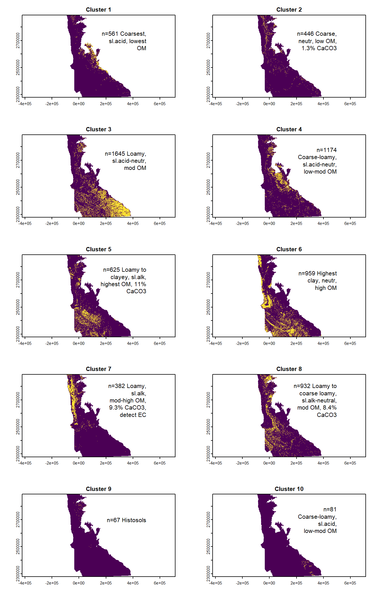

I’ve been wanting to make some maps that show the distribution of individual clusters/regions throughout the state of MN, for different “clusterings” (versions of the model, different values of k).
Here I’m going to try doing that, using some similar code to what I used in Chapter 8 to highlight where values of LEP and EC were changed during our data prep/lumping.
14.2 AOI Area: Original & Final
Want to include in my results the overall area of my AOI, after the data cleaning. Probably the easiest way to do this is to get the included MUKEYs, then subset my original MUKEY crosswalk, which included a count of the raster cells that fell under each MUKEY (can multiply the number of raster cells by area of cell to get area of AOI).
Recall that each raster cell is 10 m^2
# created in ch11 "implement k-means"# ONLY included MUKEYs n=6872incl_mukeys_df <-read_csv("data/mukey_cluster_assignments_and_soilprops.csv")# original AOI list of MUKEYs (short & original MUKEY names)# ALL MUKEYs in AOI = 7862all_aoi_mukeys <-read.delim("data/gSSURGO_MN/mukey_new_crosswalk.txt", sep =",") %>%select(MUKEY, MUKEY_New, Count)# percent MUKEYs from original AOI retained (others dropped due to lack of data / not relevant area (pits, rock outrcrops))round((6872/7862)*100, digits =1)
[1] 87.4
OK, first let’s calculate the total area in the AOI before we dropped any MUKEYs due to insufficient data, etc.
# 7862 MUKEYs to startorig_cells <-sum(all_aoi_mukeys$Count)orig_cells
# percent area in final (relative to original AOI, before data# preparation)round((1090532/1212252)*100, digits =1)
[1] 90
14.3 k=6

14.4 k=7
Going from k=6 to k=7, the main difference is that some members of Cluster 1 (coarsest, slightly acid, low OM) and Cluster 2 (Loamy/coarse-loamy, neutral to sl. acid, mod OM) in the k=6 model split off to form a third cluster with intermediate characteristics in the k=7 model. In the k=7 model, this is Cluster 2 (Coarse-loamy, neutral-sl. acid, low OM)

14.5 k=8
Going from k=7 to k=8, the main difference is a split in Cluster 5 (Loamy, slightly alkaline, mod-high OM, high CaCO3) from the k=7 model. This cluster splits into 2 groups for the k=8 model: Cluster 4 (Loamy-clayey, slightly alkaline, highest OM, high CaCO3) and Cluster 7 (Loamy, slightly alkaline, low-mod OM, high CaCO3).
14.6 k=9
Going from k=8 to k=9, we have a very small number of mapunits (n=81) break away from Cluster 3 in the k-8 model (coarse-loamy, neutral-slightly acid, low-mod OM) to become Cluster 9 in the k=9 model (Coarse-loamy, neutral-slightly acid, low OM).
Looking at the maps below, mapunits belonging to Cluster 9 are isolated to the SE corner of the state. Some artefacts are visible on the map, it looks like perhaps the Olmsted county is producing the rectangular boundary pattern we are seeing?
The 4 most common geomorphic descriptions for mapunits in this cluster are: loess hills, valley sides, valley sides on loess hills
The top 4 mapunit names are:
Downs-Nasset complex, sinkhole karst, 2 to 6 percent slopes
Going from k=9 to k=10, we have a new cluster appear in the coarse texture category, Cluster 2 (Coarse, neutral, low OM, 1.3% CaCO3). Most of the mapunits in this cluster came from Cluster 1 in the k=9 model (Coarsest, lowest OM, sl. acid, 0.3% CaCO3) but a few came from Cluster 2 (Coarse-loamy, neutral-slightly acid, low OM, 0.3% CaCO3).

14.8 k=11
Going from k=10 to k=11, we see a new cluster at the highest clay level created. It has 204 unique MUKEYs, but appears to cover a relatively large area concentrated in the Red River Valley. This is Cluster 7 in the k=11 model (Highest clay, neutral-slightly alkaline, moderate OM, 3% CaCO3, EC=1). It is comprised of members from Cluster 6 (Highest clay, neutral, high OM) and Cluster 7 (Loamy, slightly alkaline, mod-high OM, 9.3% CaCO3, detect EC) in the k=10 model.